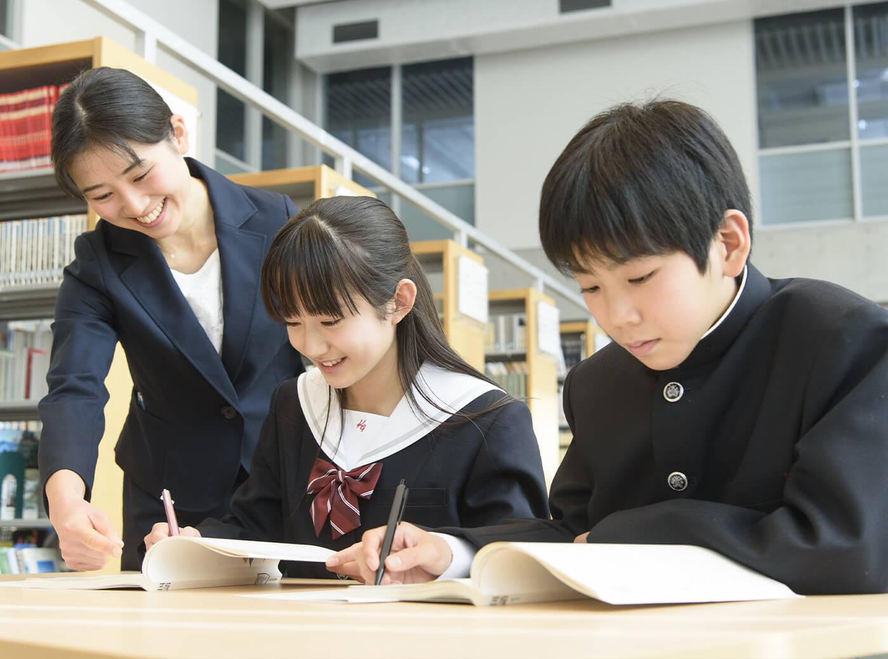

挑戦する
難しい問題にもまず向き合ってみる。「やってみた」が次の自信になります。
ABOUT KIRAMEKI / HIGASHIURA
東浦で50年以上。目先の成績だけではなく、挑戦すること、最後まであきらめないこと、自分で学ぶこと。その経験を、子どもたちの未来へ。

OUR STORY
煌めき学舎東浦教室は、長い時間をかけて地域の子どもたちと向き合ってきました。時代が変わっても大切にしているのは、子ども自身が「やってみよう」と思えることです。
先生・教育方針を見る ↗WHAT WE VALUE
難しい問題にもまず向き合ってみる。「やってみた」が次の自信になります。
すぐに答えが出ないときも、先生と一緒に考え、もう一度挑戦する経験を大切にします。
学習計画と管理を大切にし、将来にもつながる「学ぶ力」を育てます。
A LONG RELATIONSHIP
50年以上という時間は、子どもたちの成長を見守ってきた時間でもあります。
東浦で長く学びの場を続けています。
個別指導、映像授業、カヨイホーダイなど、一人ひとりに合わせた学びを用意。
受験だけで終わらない、自分で考え学ぶ力を育てていきます。
COME AND SEE
まずは親子で教室を見て、先生と話して、ここならと思えるか確かめてください。
無料体験・お問い合わせ ↗